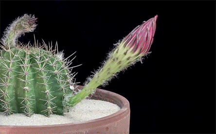

Environment Overview
Temperature
25°C
Humidity
68%
Soil Moisture
42%
Light Intensity
520 lux
Mode
Auto
Watering Today
2 times
Ventilation Today
1 time
Automatic Care Actions
Today’s Summary
Watering: 2
Lighting Adjustment: 1
Ventilation Events: 1
Current Advice
Soil moisture is stable. Continue automatic monitoring.
| Time | Action | Trigger |
|---|---|---|
| 09:15 | Auto watering | Soil moisture below threshold |
| 11:40 | Shade deployed | Excessive light intensity |
| 15:05 | Fan activated | Temperature above threshold |
Growth Time-lapse

Daily images captured by the camera are combined into a growth time-lapse sequence.
Chat with Your Plant
AI Recognition & Health Analysis

Plant Recognition
Detected Plant: Pothos
Confidence: 95%
Capture Source: Webcam
Disease / Health Detection
Status: Healthy
AI Output: Healthy
Recommendation: No action needed
Growth & Care Trend
Weekly AI Report
This week, the plant remained generally healthy. Soil moisture dropped below the threshold
twice,
triggering automatic watering. Light exposure was stable overall. No disease risk was detected.
Recommendation: maintain the current watering schedule and continue automatic monitoring.